Clínica D' Pie Center · Guía por módulo con pasos y capturas de pantalla
Versión 1.2 · 20 de noviembre de 2026
Contenido
Ingreso al sistema
Iniciar sesión
Recuperar la contraseña
Pantalla de inicio (dashboard)
Navegación general
Módulo Opciones
Módulos y opciones del menú
Permisos por grupo
Grupos de usuarios
Usuarios
Dashboards de inicio
Datos de la empresa y facturación electrónica
Videos de la pantalla de turnos
Sucursales
Módulo Catálogos
Funcionamiento común
Tratamientos
Especialistas
Horarios y demás catálogos
Módulo Registros
Expedientes
Citas: calendario
Citas: agendar una cita nueva
Procedimientos (atención del especialista)
Pantalla de turnos
Cupones de descuento
Inbound (llamadas)
Módulo Facturación
Caja: apertura y cobros pendientes
Manejo de efectivo: entradas y salidas
Cobro de citas por adelantado
Cierre de caja
Cobrar y emitir el DTE
Procedimientos en curso
Anulaciones de DTE
Diagnóstico DTE
Módulo Reportes
Funcionamiento común
Expedientes
Citas
Procedimientos
Caja
Datos de las capturas. Las imágenes se tomaron del sistema en funcionamiento. Los correos, teléfonos y números de documento de pacientes y usuarios se reemplazaron por valores de ejemplo.
Permisos. Cada usuario ve en el menú solo las opciones que su grupo tiene asignadas en Opciones › Permisos. Si no encuentra una opción descrita en este manual, solicítela al administrador del sistema.
1. Ingreso al sistema
1.1 Iniciar sesión
Abra el sistema en el navegador (Chrome o Edge).
Escriba su Usuario y su Contraseña. El ícono del ojo muestra u oculta la contraseña.
Active Recordar usuario si trabaja siempre en el mismo equipo.
Presione Entrar. El sistema abre su pantalla de inicio.
Seguridad. Todas las pantallas y la información del sistema requieren haber iniciado sesión; solo el inicio de sesión, la recuperación de contraseña y la pantalla de turnos son públicos. Si la sesión vence mientras trabaja, aparece el aviso Sesión expirada y el sistema regresa a esta pantalla para ingresar de nuevo.
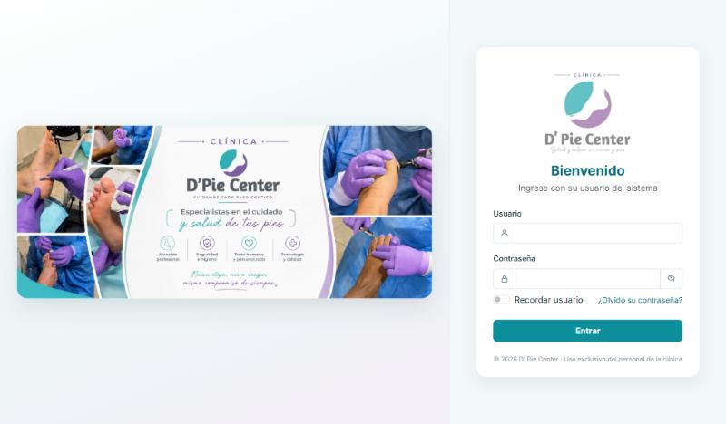
Figura 1. Pantalla de inicio de sesión.
1.2 Recuperar la contraseña
En la pantalla de inicio de sesión, haga clic en ¿Olvidó su contraseña?
Paso 1 · Correo: escriba el correo registrado en su usuario y presione Enviar código.
Revise su correo (también la carpeta de correo no deseado). Recibirá un mensaje con el asunto Código de recuperación y un código de 6 dígitos que vence en 10 minutos.
Paso 2 · Código: escriba el código. Tiene un número limitado de intentos; si se agotan o el código vence, use Reenviar código.
Paso 3 · Contraseña: escriba la nueva contraseña dos veces (mínimo 8 caracteres, con letras y números; no puede repetir las 3 últimas).
Presione Cambiar contraseña y luego Ir a iniciar sesión.
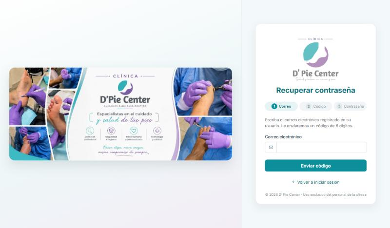
Figura 2. Recuperar contraseña: paso 1, correo electrónico.
1.3 Pantalla de inicio (dashboard)
Cada usuario ve el dashboard que tiene asignado en Opciones › Usuarios.
Dashboard de indicadores (gerencial).
Elija el período con los botones Hoy, 7 días, Este mes, Mes anterior o 90 días, o escriba las fechas y presione la lupa.
Revise los indicadores: expedientes nuevos, citas, procedimientos, asistencia, pacientes registrados, facturado y cobrado en caja. Cada tarjeta compara con el período anterior.
Use el botón de actualizar para recargar los datos.
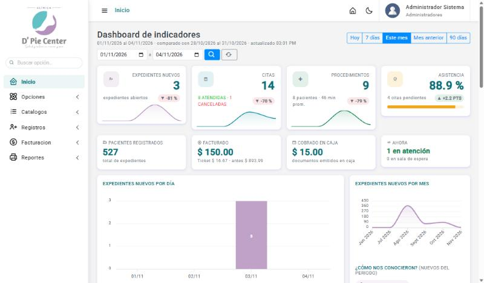
Figura 3. Dashboard de indicadores.
Dashboard operativo (administración y especialistas). Muestra la operación del día: citas programadas, pacientes por llegar, en sala, en atención, atendidos y cancelados; la agenda de hoy, las citas de los próximos 7 días, los cumpleaños de la semana y los tratamientos del mes. Un especialista ve solo sus propias citas.
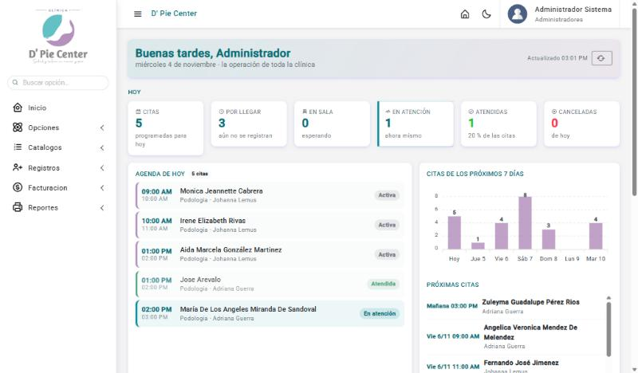
Figura 4. Dashboard operativo.
1.4 Navegación general
Menú lateral: agrupa las opciones por módulo (Opciones, Catálogos, Registros, Facturación, Reportes). El botón ☰ lo oculta o muestra.
Buscar opción: escriba parte del nombre de una pantalla para encontrarla en el menú.
Sucursal: cada usuario trabaja en la sucursal asignada. Los administradores ven en la barra superior el selector de sucursal para cambiar de una a otra; las citas, procedimientos, caja, Inbound y reportes muestran los datos de la sucursal elegida.
Casa: regresa a la pantalla de inicio. Luna: cambia entre modo claro y oscuro.
Su nombre (arriba a la derecha): perfil y cerrar sesión.
2. Módulo Opciones
Configuración del sistema. Normalmente solo lo usan los administradores.
2.1 Módulos y opciones del menú
Ingrese a Opciones › Módulos.
A la izquierda están los módulos (grupos del menú). Selecciónelo para ver sus opciones a la derecha.
Para crear, use Nuevo módulo o Nueva opción; para cambiar nombre, orden o página use el lápiz; la papelera elimina.
Después de crear una opción, asígnela a los grupos en Opciones › Permisos. Los cambios en el menú se ven al recargar la página.
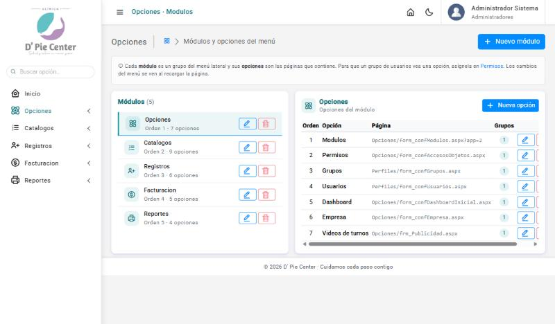
Figura 5. Módulos y opciones del menú.
2.2 Permisos por grupo
Ingrese a Opciones › Permisos.
Seleccione el grupo en la parte superior. El número indica cuántos usuarios tiene.
Active o desactive el interruptor de cada opción. El cambio se guarda en el momento.
Use Dar todo o Quitar todo para asignar un módulo completo. Puede filtrar con Buscar opción.
Los usuarios del grupo verán el cambio al recargar la página o al volver a iniciar sesión.
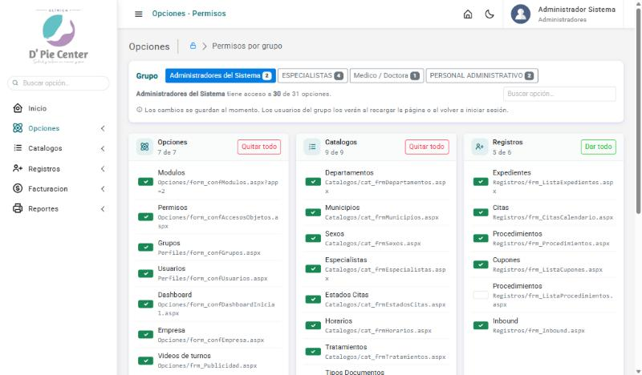
Figura 6. Permisos por grupo.
2.3 Grupos de usuarios
Ingrese a Opciones › Grupos.
Presione Nuevo grupo, escriba el código y la descripción y guarde.
Con el botón Permisos de cada fila va directamente a asignarle opciones.
Un grupo con usuarios no se puede eliminar; primero cambie a esos usuarios de grupo. El grupo Administradores no se puede eliminar.
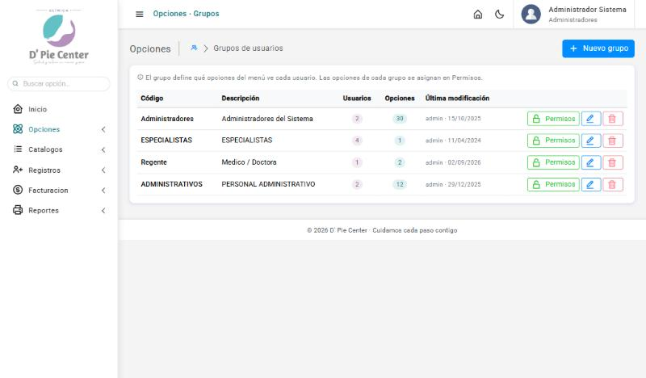
Figura 7. Grupos de usuarios.
2.4 Usuarios
Ingrese a Opciones › Usuarios. Arriba verá cuántos usuarios están activos, inactivos y cuántos ingresaron hoy.
Presione Nuevo usuario y complete nombre, usuario, correo, grupo, sucursal donde trabaja, dashboard de inicio y documento (DUI o NIT, se imprime en los DTE como responsable del emisor).
Guarde. El sistema genera la clave inicial.
Con el lápiz edita el usuario; con la flecha junto al lápiz puede activar o inactivar, restablecer la clave o eliminar.
Filtre por nombre, grupo o estado con los controles sobre la tabla.
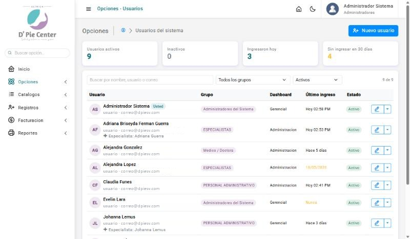
Figura 8. Usuarios del sistema.
2.5 Dashboards de inicio
Ingrese a Opciones › Dashboard.
Cada fila es una página de inicio que se puede asignar a los usuarios. El ojo la muestra; el lápiz la edita.
Para que un usuario use un dashboard, asígnelo en Opciones › Usuarios.
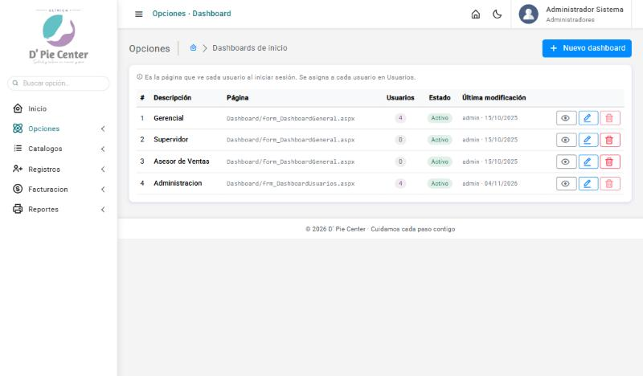
Figura 9. Dashboards de inicio.
2.6 Datos de la empresa
La pantalla tiene tres pestañas.
Datos generales: nombre comercial, propietario, NRC, NIT, teléfono, actividad económica, ubicación y la cuenta Correo para envíos (SMTP). Esa cuenta envía los códigos de recuperación de contraseña. La clave se guarda cifrada: déjela vacía para conservar la guardada.
Facturación electrónica: datos del emisor de los DTE (razón social, NIT, NRC, actividad, dirección con departamento, municipio y distrito), ambiente, versiones de los documentos, logo que se imprime en el PDF y el correo con que se envían los DTE.
Firma electrónica (MH): configuración del firmador de Hacienda.
Presione Guardar en cada pestaña. Deshacer cambios vuelve a los datos guardados.
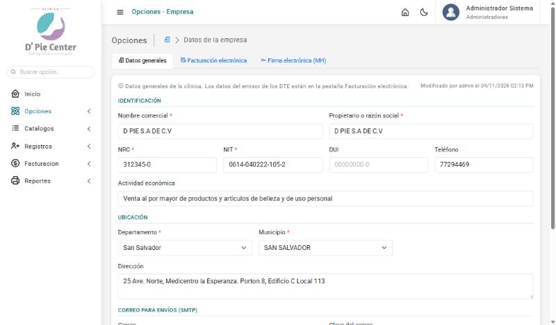
Figura 10. Datos generales de la empresa.
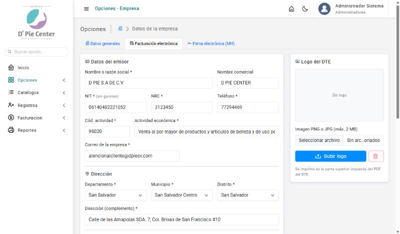
Figura 11. Datos del emisor para la facturación electrónica.
2.7 Videos de la pantalla de turnos
Ingrese a Opciones › Videos de turnos.
Arrastre el video al recuadro Agregar video o haga clic para seleccionarlo. Formatos .mp4 (H.264) o .webm, hasta 300 MB. La barra muestra el avance; Cancelar detiene la carga.
En Videos en la pantalla cambie el orden con las flechas ▲ ▼; la miniatura abre una vista previa; la papelera elimina el video.
La pantalla de turnos toma los cambios en unos 10 segundos, sin recargarla. Abrir pantalla de turnos la muestra en otra pestaña.
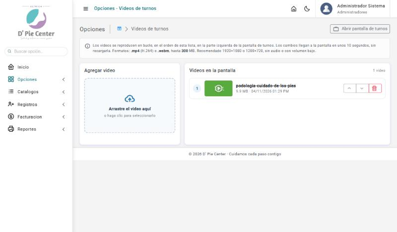
Figura 12. Videos de la pantalla de turnos.
2.8 Sucursales
Cada sucursal tiene su propia agenda, procedimientos, caja, Inbound y correlativos de DTE. Los pacientes (expedientes) y los tratamientos se comparten entre todas. Los datos existentes pertenecen a Casa Matriz.
Ingrese a Opciones › Sucursales. La lista muestra cada sucursal con su código de establecimiento para el DTE, usuarios, especialistas, citas y estado.
Presione Nueva sucursal. Escriba el código, el nombre, el teléfono y la dirección (departamento, municipio y distrito).
En Establecimiento para el DTE indique el código de establecimiento y de punto de venta (y los códigos que asigne Hacienda, si los tiene). Van en el número de control de los DTE; cada sucursal debe tener una combinación distinta.
Marque los especialistas que atienden en la sucursal y presione Guardar. Solo ellos aparecen al agendar citas en esa sucursal.
Asigne la sucursal a cada usuario en Opciones › Usuarios. Una sucursal se puede inactivar con el botón de estado.
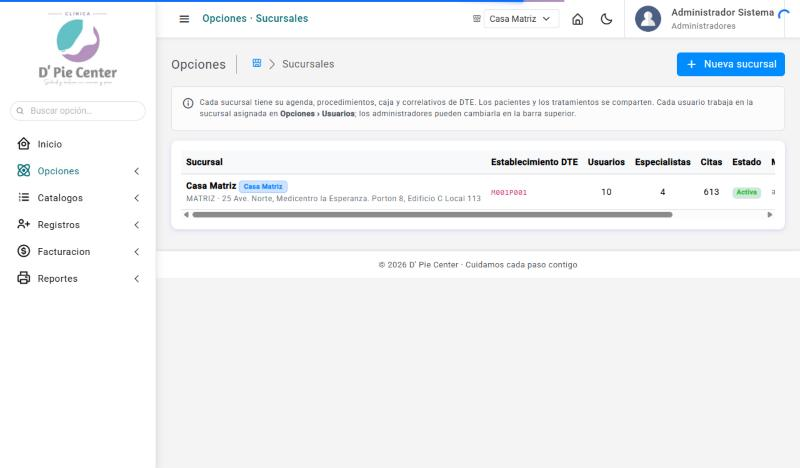
Figura 13. Lista de sucursales.
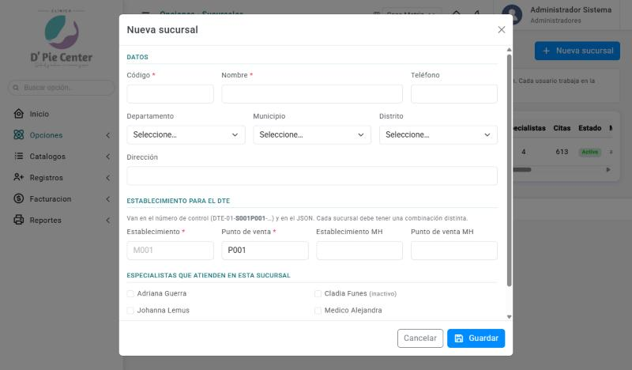
Figura 14. Formulario de nueva sucursal.
3. Módulo Catálogos
Listas que usa el resto del sistema: departamentos, municipios, sexos, especialistas, estados de citas, horarios, tratamientos, tipos de documento, tipos de cita y tipos de comprobante.
3.1 Funcionamiento común
Ingrese a Catálogos y elija el catálogo.
Busque con el cuadro Buscar y filtre por Activos / Inactivos / Todos. La columna En uso indica cuántos registros lo usan.
Presione Nuevo…, complete los campos obligatorios (marcados con *) y presione Guardar.
Use el lápiz para editar, el ojo tachado para inactivar y la papelera para eliminar. Un registro en uso no se elimina: se inactiva, para no perder el historial.
3.2 Tratamientos
Ingrese a Catálogos › Tratamientos y presione Nuevo tratamiento.
Escriba el nombre, la duración en minutos y el precio. La duración define el tiempo que ocupa en la agenda y el precio se propone al cobrar.
Opcional: características e imagen (JPG o PNG hasta 5 MB). La imagen se muestra al agendar citas.
Presione Guardar.
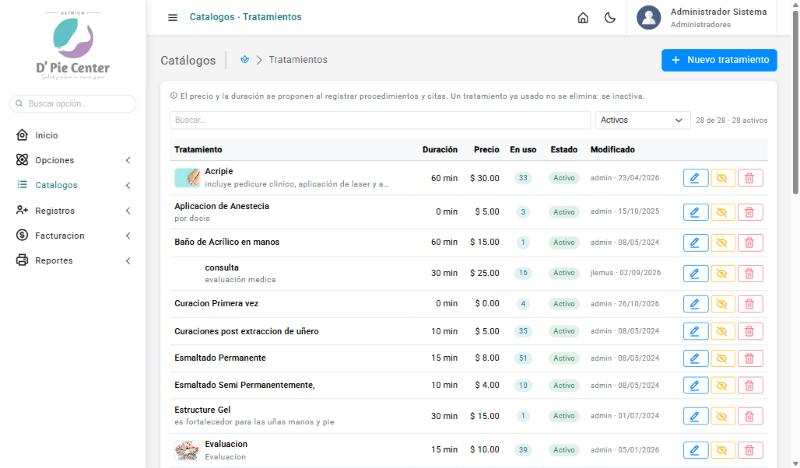
Figura 15. Catálogo de tratamientos.
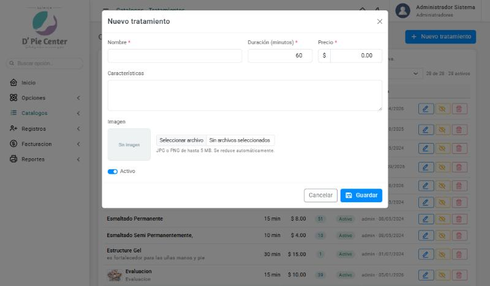
Figura 16. Formulario de nuevo tratamiento.
3.3 Especialistas
Ingrese a Catálogos › Especialistas y presione Nuevo especialista.
Escriba el nombre y vincule el usuario del sistema que lo atiende. Así, en Registros › Procedimientos ese usuario ve solo sus citas.
Un usuario solo puede estar vinculado a un especialista activo.
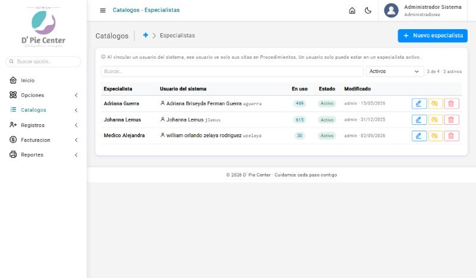
Figura 17. Catálogo de especialistas.
3.4 Horarios y demás catálogos
El catálogo de Horarios contiene las horas en punto de atención (8:00 AM a 6:00 PM). Las citas guardan su hora de inicio y fin, y el sistema las relaciona con el horario que corresponde. Los catálogos de estados de citas, tipos de cita, tipos de documento, sexos, departamentos, municipios y tipos de comprobante se administran igual (ver 3.1).
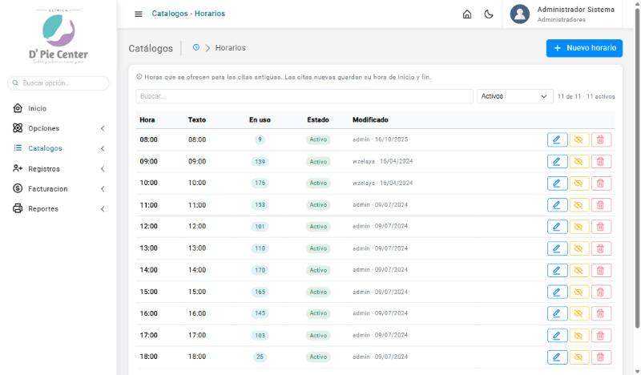
Figura 18. Catálogo de horarios.
4. Módulo Registros
4.1 Expedientes
Buscar un paciente.
Ingrese a Registros › Expedientes. Arriba verá el total de pacientes, nuevos del mes, con cita hoy y atendidos en 90 días.
Escriba nombre, apellido, documento, celular o email en el buscador, o use las letras para filtrar por inicial.
En Acciones: la carpeta abre la ficha, el globo registra un reclamo y la papelera elimina (solo si no tiene historial).
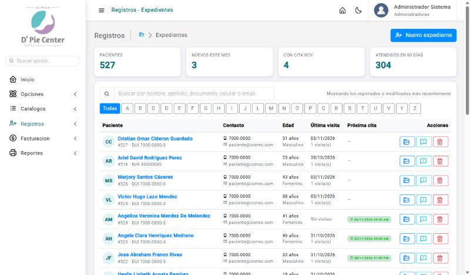
Figura 19. Lista de expedientes.
Crear un expediente.
Presione Nuevo expediente.
Complete los datos personales (nombres, apellidos, tipo y número de documento, fecha de nacimiento, sexo), el contacto (celular, email, contacto y teléfono de emergencia) y la dirección.
Indique cómo conoció la clínica y presione Guardar.
El sistema pregunta si desea agendar una cita para el paciente. Si acepta, abre el asistente de citas con el paciente ya seleccionado (ver 4.3).
Si el celular o teléfono del nuevo expediente coincide con un registro de Registros › Inbound, ese registro se inhabilita automáticamente y deja de mostrarse, porque la persona ya es paciente.
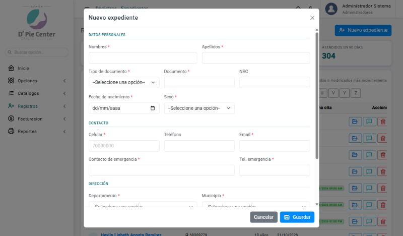
Figura 20. Formulario de nuevo expediente.
Ficha del paciente.
Abra el expediente con la carpeta. A la izquierda verá el resumen (contacto, última visita, próxima cita) con accesos para llamar, escribir y enviar correo.
Pestañas: Datos personales (editar y Guardar cambios), Citas, Procedimientos (historial con diagnósticos y tratamientos) y Reclamos.
Regrese a la lista con ← Expedientes.
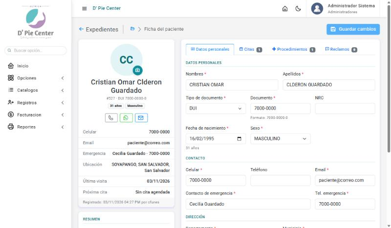
Figura 21. Ficha del paciente.
4.2 Citas: calendario
Ingrese a Registros › Citas. Se muestra la semana actual con el nombre del paciente en cada cita, incluidos los días ya pasados.
Filtre por Profesional y cambie de semana con ‹ Anterior, Hoy y Siguiente ›.
Las citas de días anteriores, y las de horas ya pasadas del día en curso, se muestran solo para consulta: no se pueden abrir ni modificar.
Haga clic sobre una cita para ver los datos del paciente y modificarla: profesional, estado, día y hora. Presione Guardar cambios. Si el estado es Cancelada, también se cancela la atención abierta.
Presione Agregar para agendar una cita nueva (ver 4.3).
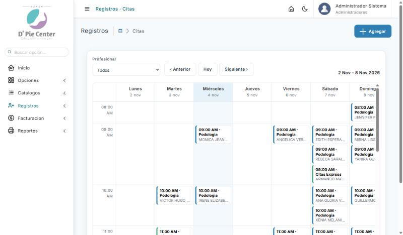
Figura 22. Calendario semanal de citas.
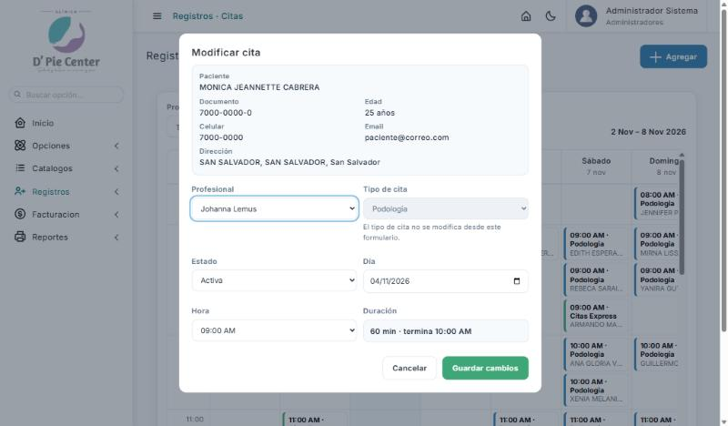
Figura 23. Modificar una cita.
4.3 Citas: agendar una cita nueva
Paciente: elija buscar por nombre o por documento, escriba al menos 3 caracteres y presione Buscar. Presione Seleccionar en el paciente y luego Siguiente ›. Si no existe, créelo primero en Expedientes.
Tratamientos: presione + Agregar en uno o varios tratamientos. La duración total define cuánto tiempo se reserva. Presione Siguiente ›.
Fecha y hora: elija el tipo de cita y el profesional. Los horarios en azul están disponibles; los grises ya están ocupados o pasaron. Haga clic en el horario y presione Siguiente ›.
Con el tipo de cita Express la hora en curso siempre está disponible, aunque el profesional ya tenga una cita a esa hora (sobrecupo para atender al paciente que llegó).
Cuando una atención ya se cobró en caja, su hora (la hora en curso o una posterior) vuelve a quedar disponible.
Confirmar: revise paciente, profesional, fecha, tratamientos, duración y total. Agregue notas si es necesario (sin información clínica sensible) y presione Confirmar cita.
El sistema muestra Cita agendada; presione Ir al calendario. Si la cita es para la hora en curso, el paciente pasa directamente a la sala de espera del especialista.
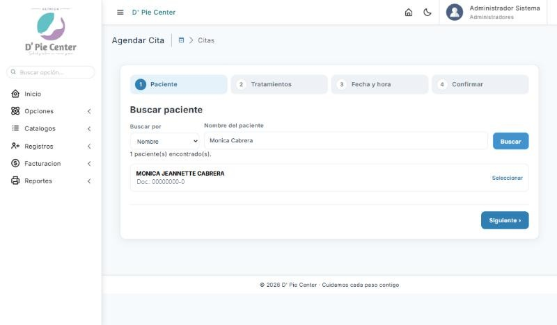
Figura 24. Paso 1: buscar y seleccionar al paciente.
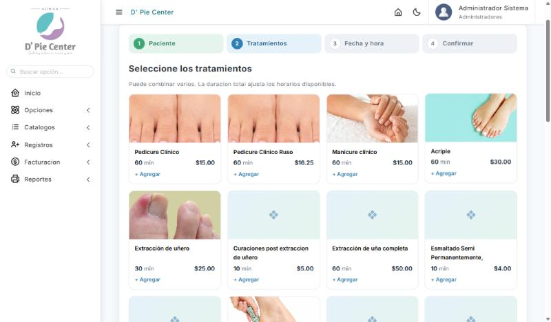
Figura 25. Paso 2: seleccionar los tratamientos.
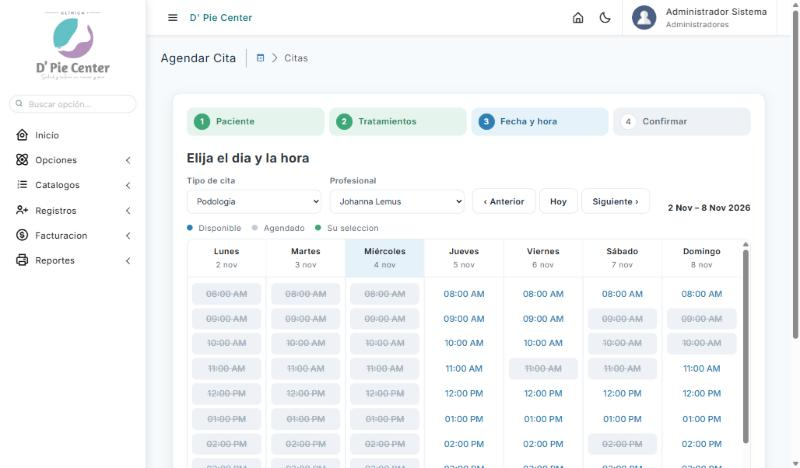
Figura 26. Paso 3: elegir el día y la hora disponibles.
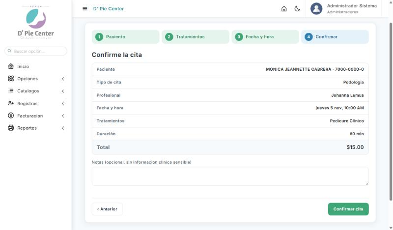
Figura 27. Paso 4: confirmar la cita.
4.4 Procedimientos (atención del especialista)
Pantalla de trabajo del especialista. Solo funciona para usuarios vinculados a un especialista en Catálogos › Especialistas; los demás ven el aviso Pantalla solo para especialistas.
Ingrese a Registros › Procedimientos. A la derecha está la cola de hoy: pacientes en sala de espera y citas del día en orden.
Presione Llamar al siguiente, o Llamar en un paciente de la cola, e inicie la atención. El nombre aparece en la pantalla de turnos como Atendiendo.
Registre el diagnóstico y los tratamientos realizados (puede agregar o quitar tratamientos).
Presione Finalizar atención. Mientras se procesa se muestra un mensaje de espera; al terminar se guarda el diagnóstico y la factura queda pendiente de cobro en Caja. El siguiente paciente no se llama automáticamente: cuando esté listo, use de nuevo Llamar al siguiente.
Para reprogramar, cambiar de especialista o cancelar use Facturación › Procedimientos (5.6).
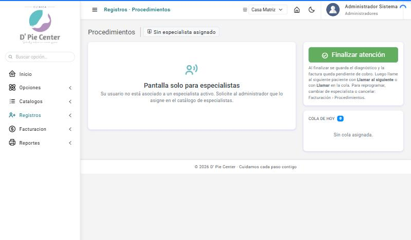
Figura 28. Procedimientos: cola del día y finalizar atención.
4.5 Pantalla de turnos
Ábrala desde Registros › Pantalla de turnos (se abre en una pestaña nueva) o desde Opciones › Videos de turnos. Está pensada para el televisor de la sala de espera y no requiere iniciar sesión.
A la izquierda se reproducen los videos en bucle; a la derecha, el paciente que se está atendiendo y los próximos turnos (primer nombre y primer apellido, hora y especialista).
Use los botones de arriba a la derecha para activar el sonido del aviso y para pantalla completa. Cuando se llama a un paciente aparece un aviso grande.
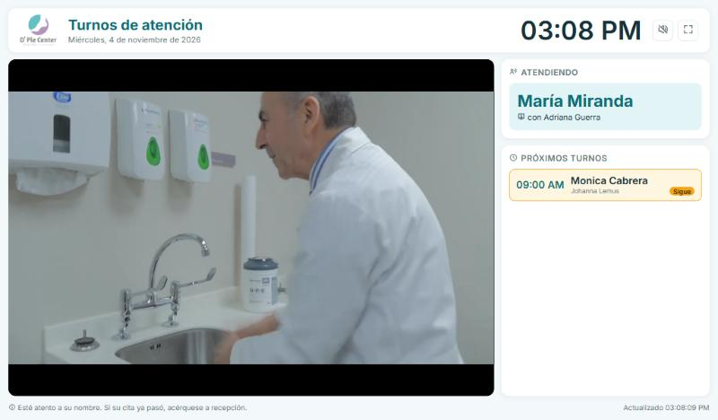
Figura 29. Pantalla de turnos de la sala de espera.
4.6 Cupones de descuento
Ingrese a Registros › Cupones. Arriba verá los cupones vigentes, usados, vencidos y el descuento del mes.
En Configuración defina el descuento y la vigencia por defecto.
Presione Nuevo cupón. Si elige un paciente, solo él podrá usarlo; si lo deja vacío es un cupón de promoción y debe escribir el nombre de la persona a quien se entrega. Indique el descuento y guarde. El cupón tiene un código QR que se presenta en caja.
Filtre por Vigentes, Usados, Vencidos, Anulados o Todos.
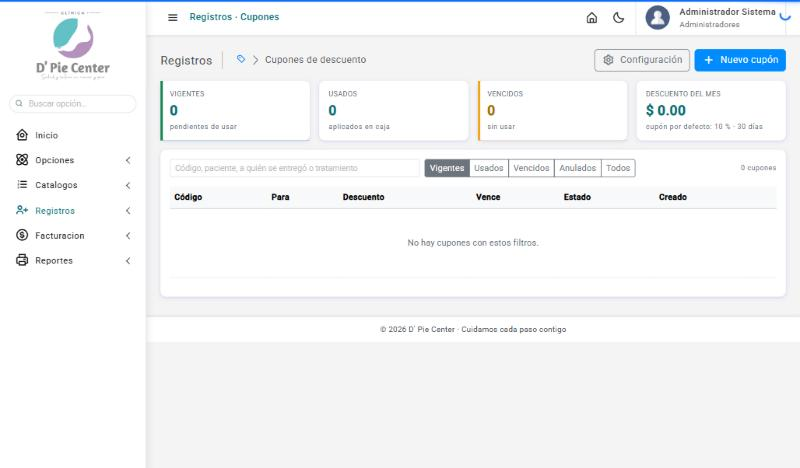
Figura 30. Cupones de descuento.
4.7 Inbound (llamadas)
Ingrese a Registros › Inbound.
En Nuevo registro escriba el teléfono y el nombre del cliente, marque Ya contestó si corresponde y presione Guardar.
Si el teléfono ya existe en un expediente (celular o teléfono del paciente), el sistema muestra el aviso Ya existe en expediente con el número y nombre del paciente, no guarda el registro y deja el formulario limpio para capturar uno nuevo.
En la lista filtre por fechas, estado (pendientes o contestados) o texto, y marque como contestados los pendientes. La lista y los indicadores no muestran los registros cuyo teléfono ya pertenece a un expediente.
Presione Excel para descargar la lista.
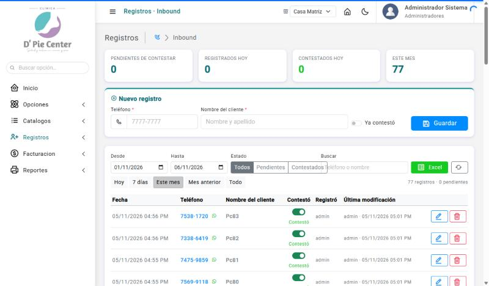
Figura 31. Registro de llamadas (Inbound).
5. Módulo Facturación
5.1 Caja: apertura y cobros pendientes
Cada usuario tiene su propia caja del día: abre, cobra y cierra solo lo suyo. Los cobros de otros usuarios no se mezclan en su cierre.
Ingrese a Facturación › Caja.
Al iniciar el día revise el fondo de caja (efectivo inicial). El sistema propone lo que usted contó al cerrar su caja anterior y lo indica debajo del campo. Si escribe otro monto, aparece un aviso en rojo con la diferencia y, al presionar Abrir caja, el sistema pide confirmar: Corregir el fondo o Sí, abrir con el monto escrito. Sin caja abierta no se puede cobrar.
En Pendientes de cobro están las atenciones finalizadas. El total ya lleva el descuento por tratamiento (si el tratamiento tiene descuento en Catálogos › Tratamientos). Busque por paciente, documento, celular o número de factura y filtre por período.
Presione Cobrar en la fila del paciente (ver 5.5).
Las demás pestañas son: Citas por adelantado (5.3), Emitidos en esta caja (consulta y reimpresión de los documentos) y Manejo de Efectivo (5.2).
Al final del día presione Cerrar caja (ver 5.4).
Fondo de caja. Si el fondo no coincide con el efectivo real del cajón, la diferencia aparecerá como faltante o sobrante al cerrar. Use el monto propuesto salvo que el efectivo haya cambiado (por ejemplo, un depósito); en ese caso registre el movimiento en Manejo de Efectivo.
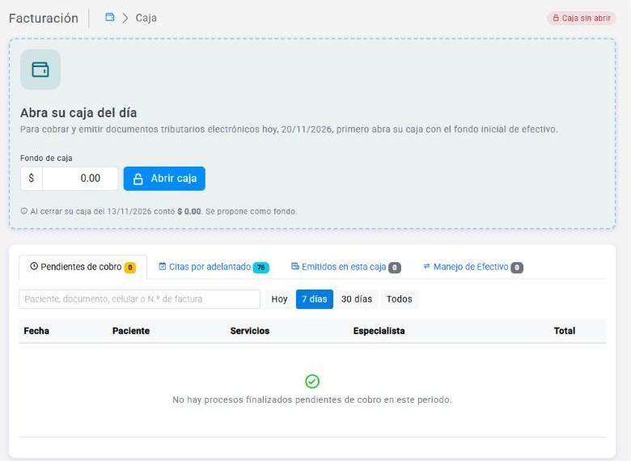
Figura 32. Caja: apertura y pendientes de cobro.
5.2 Manejo de efectivo: entradas y salidas
Registra el efectivo que entra o sale de la caja sin ser un cobro. Solo se puede usar con la caja abierta de hoy.
Abra la pestaña Manejo de Efectivo y presione Entrada de efectivo o Salida de efectivo. En el formulario puede cambiar entre entrada y salida con los botones de arriba.
Escriba el monto y elija el tipo:
Entrada: Reposición de fondo, Cambio (sencillo), Préstamo u Otro.
Salida: Gasto, Pago a proveedor, Depósito bancario, Retiro u Otro. No se puede sacar más del efectivo disponible, que se muestra arriba del formulario.
Escriba el motivo (obligatorio, al menos 5 caracteres) y, si aplica, una referencia (número de factura del proveedor, boleta de depósito, vale…). Presione Registrar entrada o Registrar salida.
La lista muestra las entradas en verde (+) y las salidas en rojo (−). Si registró un movimiento por error, anúlelo con el botón de la fila e indique el motivo. Una entrada no se puede anular si ese efectivo ya salió de la caja: anule primero la salida.
Efectivo en caja = fondo + cobros en efectivo + entradas − salidas. Es el efectivo que debe haber al cerrar.
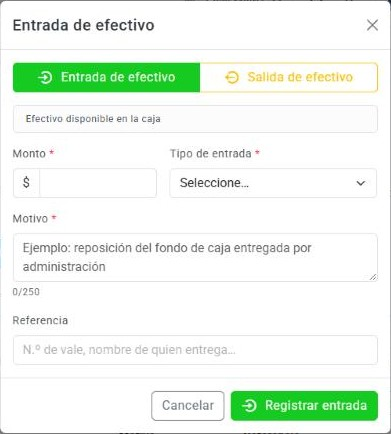
Figura 33. Manejo de efectivo: registrar una entrada o una salida.
5.3 Cobro de citas por adelantado
Abra la pestaña Citas por adelantado. Se listan las citas activas de los próximos 30 días con sus tratamientos y el total (con el descuento por tratamiento). Si busca un paciente, se amplía a citas de hasta un año.
Presione Cobrar, revise el resumen y presione Ir a cobrar. Se abre la pantalla de cobro (5.5) y se emite la factura (DTE) por el total de la cita. La cita queda marcada como Pagada.
Al atender la cita, el procedimiento usa ese pago: en caja solo queda por cobrar lo que se agregue (tratamientos nuevos). Si no se agregó nada, no queda nada pendiente.
Si la cita pagada se cancela o anula, el pago queda como saldo a favor del paciente. Los saldos se muestran en un aviso arriba de la lista. Se aplican solos al finalizar su próximo procedimiento, o use Aplicar saldo en su nueva cita.
En Registros › Citas, al modificar una cita pagada se muestra el aviso del pago por adelantado; el pago se conserva al cambiar la fecha, la hora o el profesional.
5.4 Cierre de caja
Presione Cerrar caja. La ventana muestra:
Cobros por forma de pago de su caja.
Resumen de su caja: valor de los servicios, descuentos por tratamientos, descuentos por cupones y lo cobrado en esta caja (valor de los servicios − descuentos = cobrado).
Arqueo del efectivo: fondo de caja + cobrado en efectivo + entradas − salidas = efectivo que debe haber.
Si hay procedimientos finalizados hoy en la sucursal que aún no se cobran, aparece un aviso con la lista. Es solo informativo: puede cerrar su caja de todas formas.
Escriba el efectivo contado. El sistema indica si cuadra o si hay sobrante o faltante. Si hay diferencia, explíquela en Observaciones (es obligatorio).
Presione Cerrar caja. Después de cerrar ya no se pueden emitir documentos ese día. Un administrador puede Reabrir la caja del día si es necesario (se borra el arqueo registrado).
Lo contado al cerrar se propone como fondo la próxima vez que abra su caja.
5.5 Cobrar y emitir el DTE
Elija el tipo de documento: Consumidor final (factura) o Crédito fiscal. Para crédito fiscal presione Datos fiscales y complete o seleccione los datos del cliente (NIT, NRC, actividad, dirección y distrito).
Revise los servicios. Puede agregar servicios o quitarlos con la papelera. El total incluye el IVA. Si un tratamiento tiene descuento, se muestra el precio original tachado, el % y el precio con descuento; el descuento aparece también en la factura. Los tratamientos sin descuento no muestran nada adicional.
Si el paciente tiene cupón, escanee el QR o escriba el código y presione Aplicar. El cupón se aplica sobre el precio ya descontado y el total a pagar se actualiza. En la factura el descuento de cada servicio suma el del tratamiento y el del cupón.
Elija la forma de pago: Efectivo, Tarjeta o Transferencia. En efectivo escriba el monto recibido con el teclado (Exacto, +10, +20, +50) para calcular el cambio.
Presione Pagar y confirme. Se muestra Espere un momento… mientras se genera el DTE (PDF y JSON).
Al terminar, presione Volver a pendientes. Si el envío por correo está activo, el cliente recibe el DTE con el asunto Facturación.
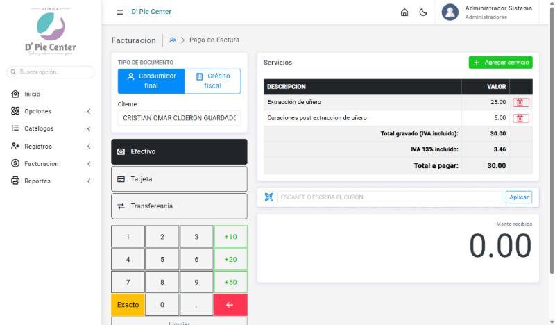
Figura 34. Pantalla de cobro: tipo de documento, servicios y cupón.
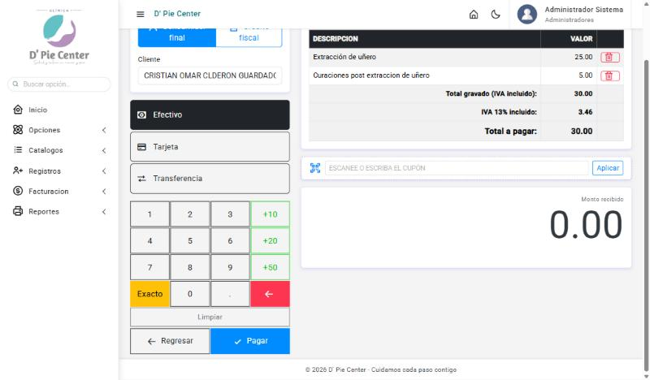
Figura 35. Forma de pago, teclado y botón Pagar.
5.6 Procedimientos en curso
Ingrese a Facturación › Procedimientos. Se listan los pacientes en atención o en sala de espera de todos los especialistas, incluidos los que quedaron abiertos de días anteriores.
Filtre por texto, especialista o estado.
En Acciones elija Reprogramar (nueva fecha y hora, conserva duración y tratamientos), Cambiar especialista o Cancelar (pide el motivo; cancela la atención y la cita).
La atención la finaliza el especialista en Registros › Procedimientos.
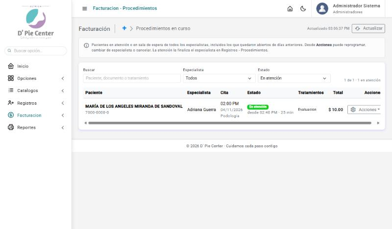
Figura 36. Procedimientos en curso.
5.7 Anulaciones de DTE
Ingrese a Facturación › Anulaciones. La pestaña En plazo para anular muestra los documentos que todavía se pueden invalidar según el plazo de Hacienda (factura 90 días, crédito fiscal 1 día).
Filtre por fechas, tipo, cajero o texto. El ícono de documento muestra el PDF.
Presione Anular, elija el motivo y confirme. Si anula por error en la información u otro motivo, la factura vuelve a la caja para emitir el documento que la reemplaza.
Pasado el plazo, la corrección se hace con una nota de crédito. Los plazos se revisan en Plazos de anulación.
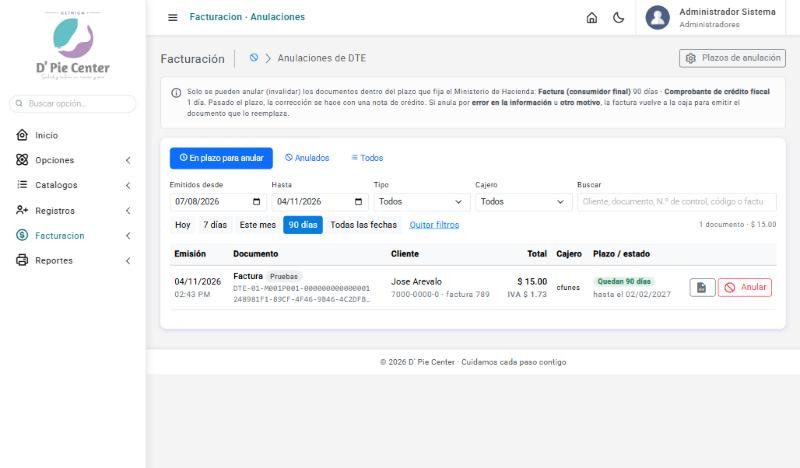
Figura 37. Anulaciones de DTE.
5.8 Diagnóstico DTE
Ingrese a Facturación › Diagnóstico DTE. El sistema revisa la base de datos, los datos del emisor, el ambiente, la transmisión a Hacienda, la carpeta de archivos y el correo.
Cada punto se marca en verde (correcto), amarillo (advertencia) o rojo (impide emitir), con la indicación de qué hacer.
Después de corregir, presione Revisar de nuevo. Desde esta pantalla también se puede enviar un correo de prueba.
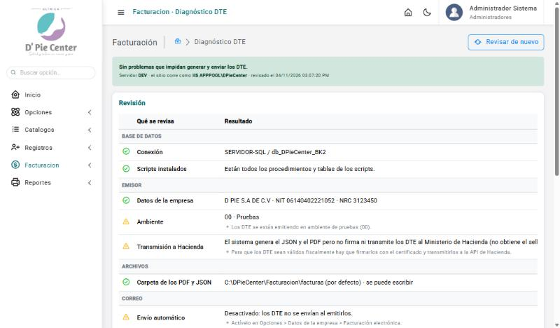
Figura 38. Diagnóstico de la facturación electrónica.
6. Módulo Reportes
6.1 Funcionamiento común
Elija el rango de fechas o use los botones rápidos (Hoy, Esta semana, Este mes, Mes anterior, Este año).
Aplique los filtros del reporte y presione Consultar. Los administradores pueden elegir además la sucursal. Quitar filtros vuelve a los valores iniciales.
Revise los indicadores, los resúmenes por categoría y el detalle; el cuadro Buscar en el detalle filtra la tabla.
Presione Exportar a Excel (CSV) para descargar los datos o Imprimir para imprimir o guardar como PDF.
6.2 Expedientes
Pacientes registrados en el período: nuevos, ya atendidos, recurrentes, edad promedio y pacientes sin email; distribución por sexo, edad, cómo conocieron la clínica, departamento y usuario que registró. Filtros: sexo, departamento, cómo nos conoció y paciente.
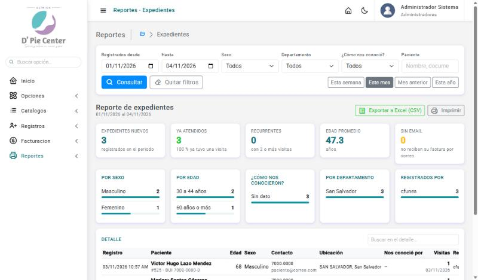
Figura 39. Reporte de expedientes.
6.3 Citas
Citas del período con su valor programado: atendidas, canceladas, asistencia y pendientes; por estado, especialista, tipo de cita y día de la semana. Filtros: especialista, estado, tipo de cita y paciente.
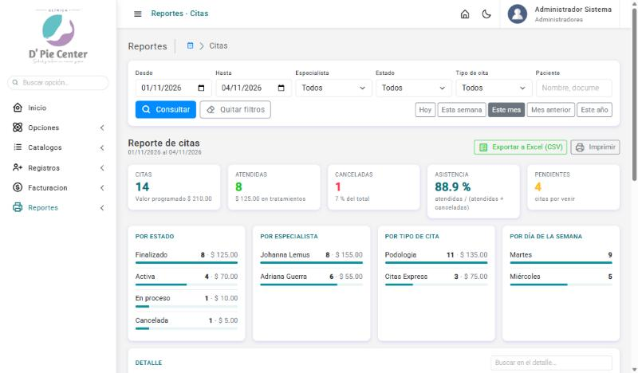
Figura 40. Reporte de citas.
6.4 Procedimientos
Procedimientos realizados: facturado, cobrado, pendiente de cobro y duración promedio de la atención; por especialista, tratamiento y día. Filtros: especialista, tratamiento, tipo de cita y paciente.
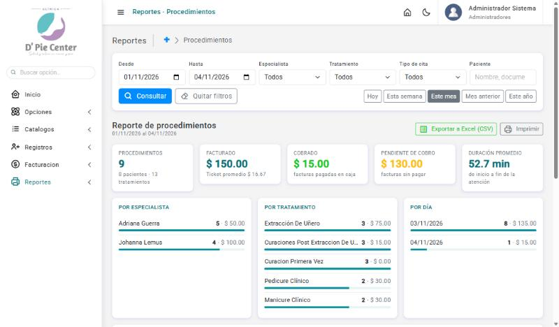
Figura 41. Reporte de procedimientos.
6.5 Caja
Ingrese a Reportes › Caja. Al abrir muestra directamente la información del día en curso.
Cambie el rango o elija un cajero y presione Consultar.
Revise el total cobrado, documentos emitidos, ticket promedio, anulados, pendiente de cobro, manejo de efectivo (entradas y salidas), arqueo (sobrantes y faltantes), descuentos por tratamientos y por cupones y tickets sin costo.
Consulte los resúmenes por forma de pago, cajero, tipo de documento y día, y la tabla de aperturas y cierres de caja: fondo, cobrado (con sus descuentos), efectivo, entradas y salidas, esperado, contado y diferencia.
La sección Manejo de efectivo lista cada entrada (+) y salida (−) con su tipo, motivo y referencia, incluidas las anuladas. En el detalle de cobros, cada documento muestra su descuento por tratamiento y el cupón aplicado.
Presione Cierre de caja (PDF) para descargar el reporte en formato de cierre de caja, listo para imprimir y firmar.
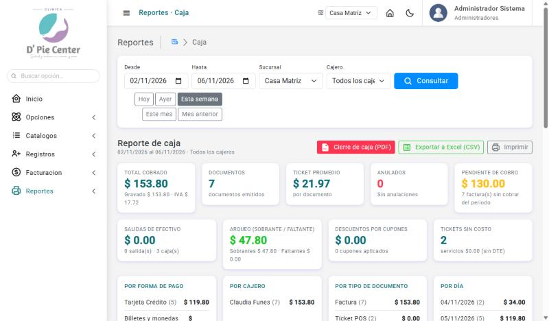
Figura 42. Reporte de caja.
Este manual describe la versión del sistema de noviembre de 2026. Para dudas o problemas, comuníquese con el administrador del sistema.